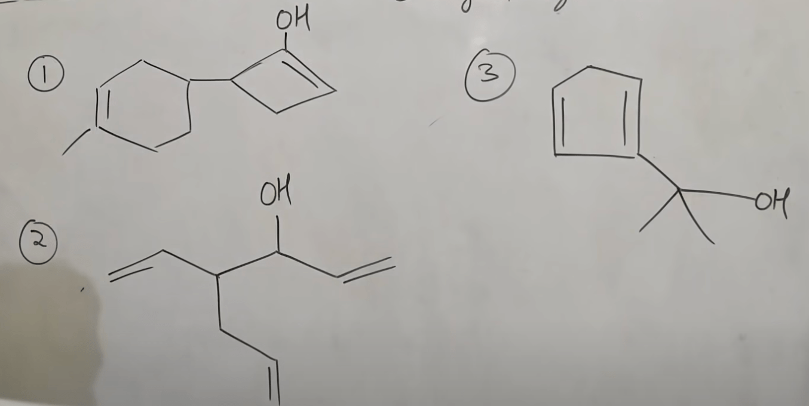

IUPAC Nomenclature : Naming Of Alcohols
YOUTUBE PLAYLIST LINK
ALL TOPICS IN THE PLAYLIST :
- Some Basic Principles and Naming Of Alkanes
- Complex Substituents and Cycloalkanes
- Naming Of Alkenes and Alkynes
- Functional Groups with Secondary Suffix
- Naming Of Alcohols
- Naming Of Aldehydes and Ketones
- Naming of Carboxylic Acids and Acid Halides
- Naming Of Acid Amides and Esters
- Naming of Cyanides, Amines, and Ethers
- Naming of Polyfunctional Compounds (More than One Functional Group)
- Naming Of Aromatic Compounds - Benzene Rings
- Naming Of Bicyclo and Spiro Compounds
NAMING OF ALCOHOLS
YOUTUBE LECTURE LINK
TOPICS IN THIS LECTURE :
-
- Alhohols have an "-OH" group attached to the Carbon atom of an alkyl group.
- IUPAC Secondary suffix = "ol".
- Start numbering of the Carbon chain in a way that the Functional Group get sthe lowest locant/number.
-
Examples on IUPAC and Common Names
- Common name = "Alkyl Alcohol".
- Common name of Methanol is Methyl Alcohol.
- Common name of Ethanol is Ethyl Alcohol.
-

- IUPAC name is : propan-2-ol
- Common name is : iso propyl alcohol (as the middle carbon has the OH)
-
- IUPAC name is : propan-1-ol
- Common name is : n-propyl alcohol (as the OH is attached to the straight chain)
- More examples on Naming of Alcohols
-
- IUPAC : butan-1-ol (click for solution video):
- Common Name : n-butyl alcohol (click for solution video):
-
- IUPAC : 2-methyl propan-1-ol (he fixes error later!) (click for solution video):
- Common Name : iso-butyl alcohol (click for solution video):
-
- IUPAC : 2-methyl propan-2-ol (click for solution video):
- Common Name : tert-butyl alcohol (click for solution video):
-
- IUPAC : butan-2-ol (click for solution video):
- Common Name : sec-butyl alcohol (click for solution video):
-
Still more examples on naming of Alcohols
- HW propblems 1/2 on Naming of Alcohols
- Answer 1 (click for solution video): 1-(cycloprop-2-enyl) cyclohex-2-en-1-ol
- Answer 2 (click for solution video): 3-ethenyl-5-methylidene cyclohex-1-ol
- Answer 3 (click for solution video): 5-cyclopropyl hex-2-en-3-ol
- Answer 4 (click for solution video): 1-cyclopentyle cycloprop-1-ol
- Answer 5 (click for solution video): 1-(cyclohex-1-enyl) propan-2-ol
- HW propblems 2/2 on Naming of Alcohols (no solutions, only answers)
- 4-(4-methyl cyclohex-3-enyl) cyclobut-1-ene-1-ol
- 4-(eth-2-enyl) hept-1,6-dien-3-ol
- 1-(cyclopent-1,4-dienyl) 1-methyl eth-1-ol

These are all isomers with the common formula \(\text{C}_4{H}_9{OH}\)
-
